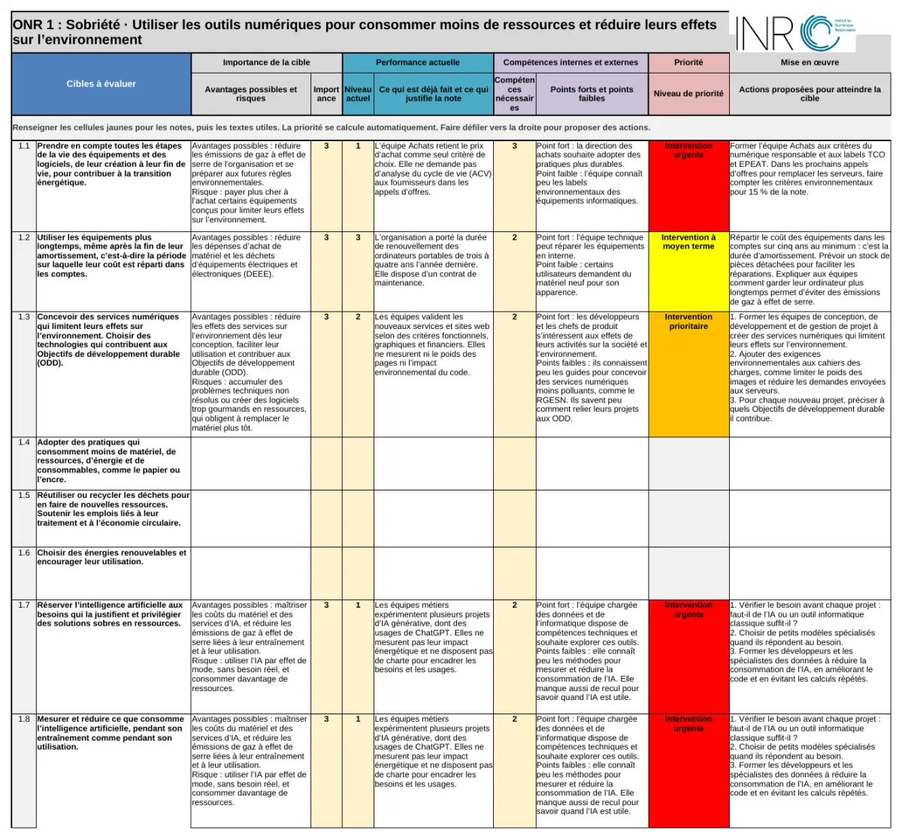
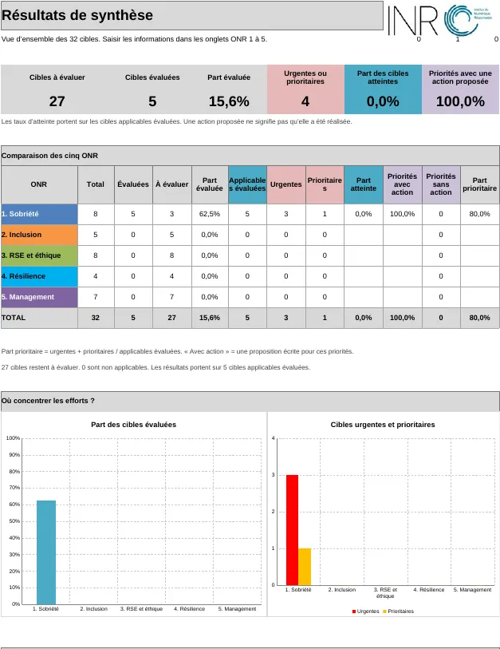

Deux notes suffisent
Pour chaque cible, vous notez son importance pour votre organisation et ce que vous faites déjà. La grille croise les deux notes et en tire l’un des sept niveaux d’intervention. Cliquez sur une case pour voir le résultat.
Comment se déroule une évaluation
Comptez deux à trois heures seul pour un premier passage, une demi-journée en atelier. Quelques mois plus tard, rejouez la grille pour mesurer vos progrès.
Poser le contexte
Dans l’onglet Contexte : organisation, personnes présentes, date. Vos passages successifs restent comparables.
Noter chaque cible
Dans les onglets ONR 1 à ONR 5 : importance de 0 à 3, niveau actuel de 1 à 4, et ce qui justifie la note.
Proposer des actions
Pour chaque cible, notez les points forts, les points faibles et les actions qui la feraient avancer.
Lire les priorités
L’onglet Résultats de synthèse montre où concentrer les efforts et les cibles à traiter en premier.
À quoi ressemble la grille
Captures de l’exemple rempli fourni avec l’outil. Vous saisissez vos notes dans les cellules jaunes, et la grille colore la colonne de priorité.


32 cibles réparties en cinq axes
Les Objectifs du Numérique Responsable reprennent les engagements de la charte de l’INR. Quatre cibles portent sur l’intelligence artificielle.
- 1SobriétéUtiliser les outils numériques pour consommer moins de ressources et réduire leurs effets sur l’environnement8 cibles
- 2InclusionDévelopper des services numériques durables que toutes et tous peuvent utiliser5 cibles
- 3RSEUtiliser le numérique de façon éthique et responsable8 cibles
- 4Résilience et stratégieUtiliser le numérique responsable pour aider l’organisation à faire face aux difficultés et à s’adapter4 cibles
- 5ManagementDonner du sens au travail et préserver les personnes et les ressources nécessaires à nos activités7 cibles
Bon à savoir
Libre et gratuit
La grille est publiée sous licence européenne CC BY 4.0 : vous pouvez l’utiliser, l’adapter et la partager, y compris dans un cadre commercial, en citant l’INR.
Un support de décision
La grille aide votre équipe à choisir par quoi commencer. Elle ne délivre ni score de conformité ni label.
Données ouvertes
Le référentiel et la matrice existent aussi en JSON et en CSV, pour vos propres outils.